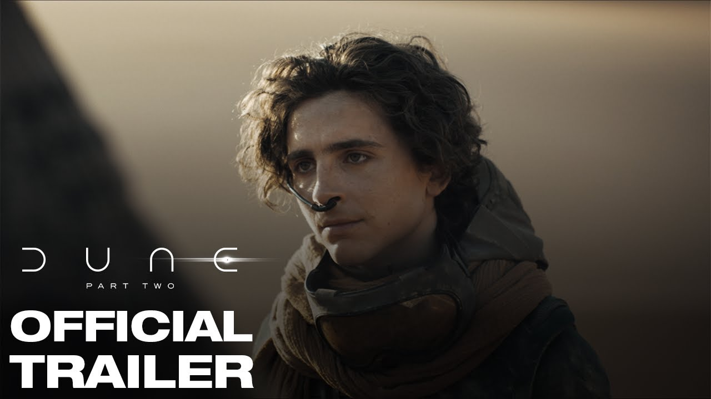
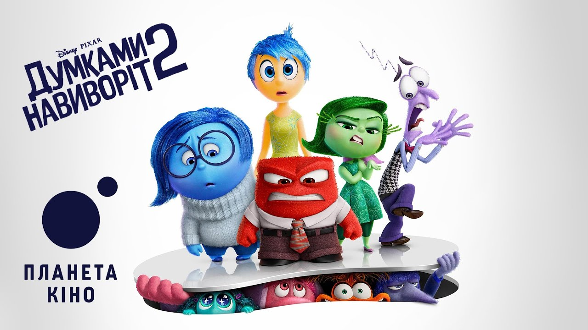
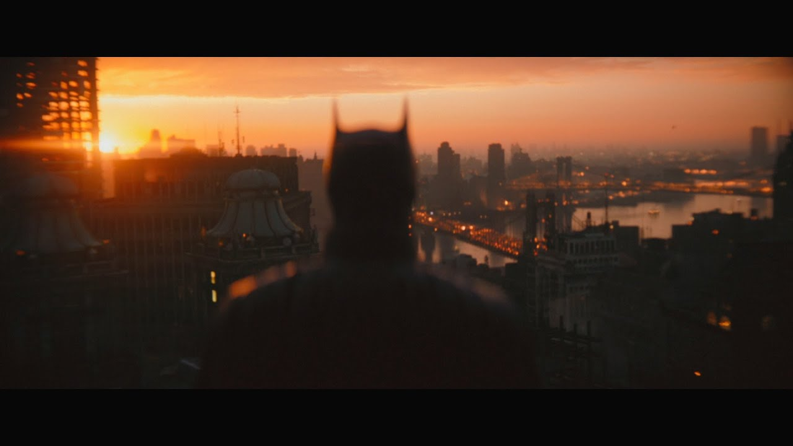
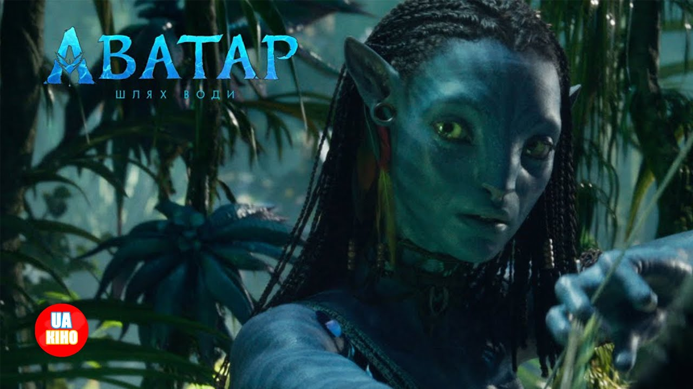

У прокаті12+
Дюна: Частина друга
Пол Атрейдес приєднується до фременів на пустельній планеті Арракіс. Між коханням, помстою та відповідальністю за майбутнє він мусить знайти власний шлях.
Київ · Афіша та розклад сеансів

Пол Атрейдес приєднується до фременів на пустельній планеті Арракіс. Між коханням, помстою та відповідальністю за майбутнє він мусить знайти власний шлях.
Команда дослідників вирушає за межі Сонячної системи, щоб знайти новий дім для людства. Космічна подорож стає історією про час, родину та силу зв’язку між близькими.

Райлі дорослішає, і в її внутрішньому світі з’являються нові емоції. Радість та її друзі намагаються зрозуміти зміни й допомогти дівчині прийняти себе.

Бетмен розслідує серію загадкових злочинів у Ґотемі. Пошук відповідей відкриває таємниці міста й змушує його переосмислити власну роль у боротьбі за справедливість.
Консьєрж Ґустав та молодий портьє Зеро опиняються в центрі пригод навколо спадщини й викраденої картини. Історія легендарного готелю поєднує гумор, дружбу та ностальгію.

Джейк Саллі та Нейтірі захищають свою родину й шукають прихистку серед морського народу Пандори. На них чекає знайомство з океаном та нові випробування.
Київ. Фільми українською у форматах 2D, 3D та IMAX.